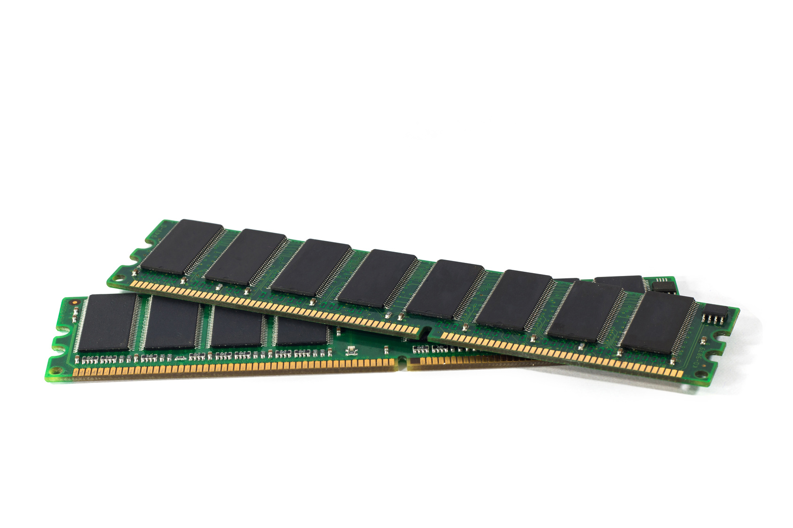
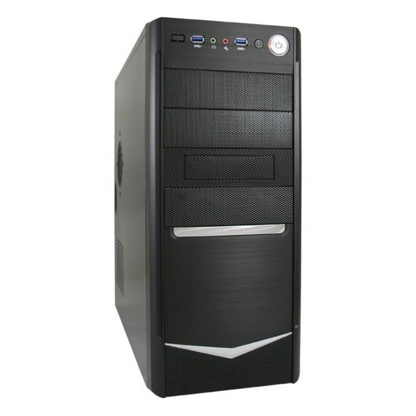

Computer Components
Hello, in this page we are going to discuss about computer component and their importance to the operation of the computer.
CPU
Alternately referred to as a processor, central processor, or microprocessor, the CPU is the central processing unit of the computer. A computer's CPU handles all instructions it receives from hardware and software running on the computer. As an example, the CPU processed the instructions to use a web browser to open and display this web page on your computer.
The CPU was first invented and developed at Intel with the help of Ted Hoff and others in the early 1970s. The first processor released by Intel was the 4004 processor.
In the CPU, there are two primary components.
-
ALU (arithmetic logic unit)- performs mathematical, logical, and decision operations. -
(control unit)- directs all the processors operations. -
Instruction register and pointer- specifies the location in memory containing the next instruction to be executed by the CPU. When the CPU completes the execution of the current instruction, the next instruction is loaded into the instruction register from the memory location pointed to by the instruction pointer. -
Cache- The CPU never directly accesses RAM. Modern CPUs have one or more layers of cache. The CPU's ability to perform calculations is much faster than the RAM's ability to feed data to the CPU. -
Clock and control unit- All of the CPU components must be synchronized to work together smoothly. The control unit performs this function at a rate determined by the clock speed and is responsible for directing the operations of the other units by using timing signals that extend throughout the CPU.
Motherboard
A motherboard is the main circuit board inside a computer that connects the different parts of a computer together. It has sockets for the CPU, RAM and expansion cards and it also hooks up to hard drives, disc drives and front panel ports with cables and wires.
The motherboard links all the individual parts of a computer together and also, allows the CPU to access and control these separate parts. Other than bridging internal components, the motherboard ports also allows you to connect external devices to the computer. Such external devices would include the monitor, speakers, headphones, microphone, keyboard, mouse, modem and other USB devices.

Memory
Computer memory is any physical device capable of storing information temporarily, like RAM (random access memory), or permanently, like ROM (read-only memory). Memory devices utilize integrated circuits and are used by operating systems, software, and hardware.
Memory can be either volatile and non-volatile memory. Volatile memory is memory that loses its contents when the computer or hardware device loses power. Computer RAM is an example of volatile memory. It is why if your computer freezes or reboots when working on a program, you lose anything that hasn't been saved. Non-volatile memory, sometimes abbreviated as NVRAM, is memory that keeps its contents even if the power is lost. EPROM is an example of non-volatile memory.
Memory is not disk storage! It is very common for new computer users to be confused by what parts in the computer are memory. Although both the hard drive and RAM are memory, it's more appropriate to refer to RAM as "memory" or "primary memory" and a hard drive as "storage" or "secondary storage."
Power Supply
Power supply is a hardware component of a computer that supplies all other components with power. The power supply converts a 110-115 or 220-230 volt AC (alternating current) into a steady low-voltage DC (direct current) usable by the computer and rated by the number of watts it generates. The image

Chassis
Alternatively referred to as the case . The chassis is the housing that helps protect and organize all the components that make up a desktop computer. The picture is an empty computer chassis.
